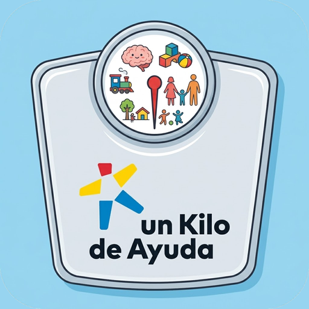
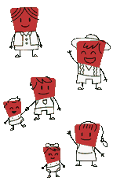

Operaciones UKAUn Kilo de Ayuda
Sin conexión a internet. La plataforma se abrirá cuando vuelva la señal.
¿Recibir avisos de Operaciones UKA?Alertas importantes, tu agenda del día y salidas sin capturar, aunque la app esté cerrada.